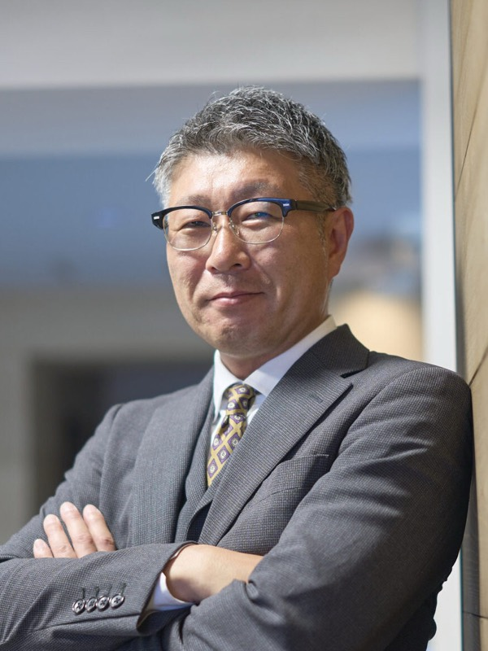
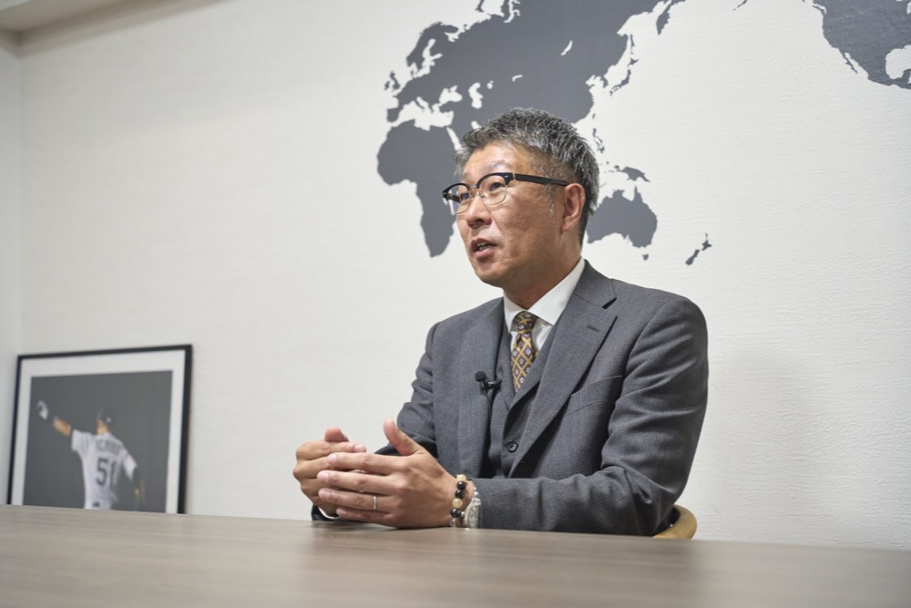
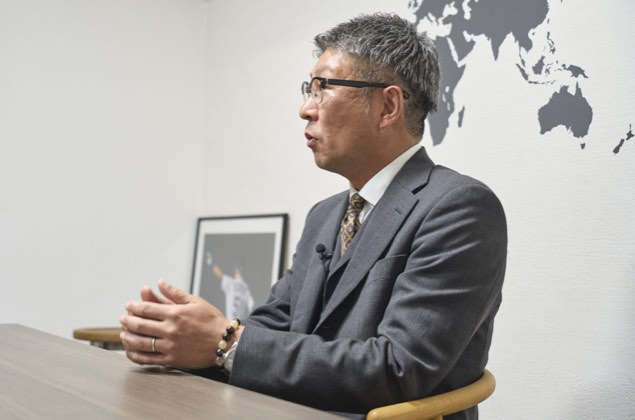
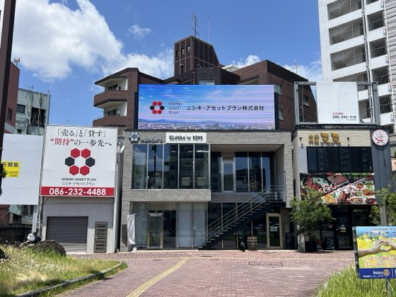
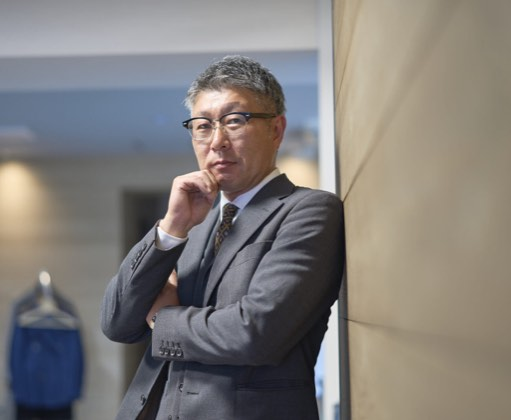
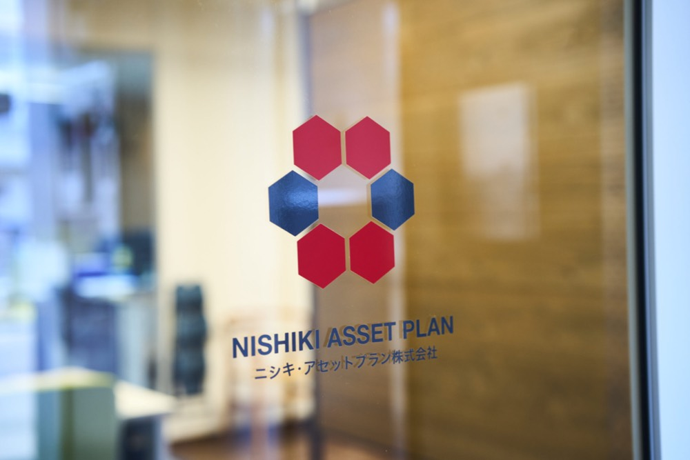

期待の一歩先へ!
髙橋 洋介yosuke takahashi
ニシキ・アセットプラン株式会社 代表取締役
1978年岡山市生まれ 。関西高等学校卒業後、就職氷河期を背景に工事現場などで働く 。22歳で不動産業界へ飛び込み、15年の経験を経て2016年に独立、同社を設立 。「期待の一歩先へ」をキャッチコピーに、岡山市中心部の繁華街にある飲食店ビル管理に特化した独自のビジネスモデルを展開 。
企業サイトを見るCHAPTER 01
動機はスーツと高級車?不動産業界への原点

Qなぜ不動産業界を目指し最終的に独立しようと思われたのでしょうか?
A高校を卒業した当時はまさに就職氷河期と言われた時代で若者にはこれといった就職の選択肢が残されていませんでした 。大学への進学はせず、しばらくは建築工事現場などで汗をかき、生計を立てる日々を送っていました。しかし、そんな厳しい生活の中でも私の心の中には「いつか必ず不動産屋になる」という明確な夢が芽生えていました 。その理由は今振り返ると非常に単純なもので格好良くスーツを着こなし高級車に乗り、派手で豊かな生活を送っていそうな職業が当時の私の頭には不動産屋しか思いつかなかったからです 。「お金を稼ぎたい」「大きな仕事をして見返したい」という若者らしいハングリー精神が私のすべての原動力でした 。その後、22歳で賃貸専門の不動産会社への就職が決まり念願だったキャリアの第一歩を踏み出しました 。その瞬間に、「いつかは自分の会社を立ち上げる」という強い決意を固めていました 。家業が不動産会社だったわけではなく、完全にゼロからの挑戦でした。
Q下積み時代から独立に至るまでの道のりにはどのようなドラマがあったのですか?
A22歳で業界に飛び込み、独立を果たしたのは37歳のときです 。地元の不動産会社数社で実務を学び、お客様や地域の方々と強固な信頼関係を築けたこの15年間があったからこそ、現在の自分がいます 。現場で経験を重ねたプロセスこそが私にとって一番の近道だったと感じています 。ちなみに、会社名の「ニシキ」は曾祖母の代から地元で大家業を営んでいた「錦興産」という会社に由来しています。直接の資本関係はありませんが、「ニシキ」という響きと家族の歴史を感じる大切な名前を譲り受け「ニシキ・アセットプラン株式会社」を創業しました 。
CHAPTER 02
繁華街特化の強みと“期待の一歩先へ”という覚悟
Q事業の特徴や強みを教えてください。
A当社の強みであり差別化ポイントとなっているのは岡山市中心部の繁華街にある「飲食店ビル」の管理に完全に特化している点です 。一般的なマンションや郊外の物件の管理は基本的にお受けしていません 。トラブルや緊急事態が発生した際に会社から自転車ですぐに駆けつけられる範囲だけにエリアを限定しているからです 。繁華街の飲食店ビル管理は夜間のトラブル対応や特有の交渉ごとも多く他社が敬遠しがちな領域です。しかし、誰もやらないからこそ競合が存在せず、独自の優位性を保ち続けることができています。前職では建設会社に勤め、不動産の売買をメインに担当していたため、実は繁華街のビル管理とは全く無縁でした。転機となったのは前職時代にたまたま繁華街のビルの売買を仲介したことです。その際、購入してくださったお客様から「髙橋くんが管理を引き受けてくれるなら、この物件を買います」と言っていただいたのです。当時はノウハウもありませんでしたが覚悟を決めて引き受け、必死にノウハウを蓄積していったことが後に独立するための最大の武器となったのです。
Q事業を運営する上で、最も大切にされている経営哲学は何ですか?
A当社のキャッチコピーとして掲げている「期待の一歩先へ」という姿勢です 。お客様からご依頼やご相談をいただいた以上、単に言われた通りの業務をこなすだけではなく相手の期待を常に上回る成果や一歩踏み込んだ誠実なサービスを提供することを何よりも心がけています 。「髙橋に頼んで本当に良かった」と心から満足していただくこと 。その感動の積み重ねだけが本当の信頼を生み、次の新しいご縁へと繋がっていきます 。実際、現在の当社の仕事のほとんどは既存のお客様からのご紹介や口コミによるものです 。目の前のお客様とのご縁を何よりも大切にし、泥臭く誠実に向き合い続けること 。これこそが私たちが地域で生き残り、持続的な経営を続けていくための揺るぎない基盤となっています 。



CHAPTER 03
自社ビル建築とデジタルサイネージへの新たな挑戦

Q現在、会社として最も注力されている取り組みや、新たなビジネス展開について教えてください。
A令和4年に私にとって大きな悲願であった自社所有のテナントビル「大雲寺GATE」を建築しました 。現在は4件のテナント様にご入居いただき、順調に稼働しています 。そして2026年の5月末にこのビルの屋上スペースを活用し、大型のデジタルサイネージを設置して新たな広告事業を本格的にスタートさせました。これまでの不動産管理や売買仲介という既存のビジネスモデルに加えて自社ビルの屋上を活用した「広告収入」という第2のストック型の経営の柱を築くことが最大の狙いです 。不動産業界、特に売買仲介は景気の波をダイレクトに受けやすく、売れる保証がどこにもない厳しい世界です。だからこそビル管理による家賃収入とデジタルサイネージによる広告収入という安定した継続収入を確保することでどのような時代が来ても揺るがない強固な経営基盤を持った組織へと会社を成長させていきたいと考えています 。
Q今後の目標や、ニシキ・アセットプランとしての未来像をどのように描いていますか?
A将来的には従業員を数名をお迎えし、組織としての対応力や業務の幅をさらに広げていきたいと考えています。ただ会社の規模を極端に大きくしてメジャーな大手の不動産会社と同じステージで戦うつもりはありません 。私たちが目指しているのは地域に深く根付いた「インディーズバンド」のような存在です 。大手の誰もが知るような存在にならなくとも当社の専門的な強みを理解し、熱烈に信頼してくださるコアなファンのお客様を何よりも大切にしていきたいです。 実は創業1年目は売上の見通しが立たず管理物件からの収入だけでは食べていけないほど苦しい日々が続きました。自分自身の給料すら満足に取れない困窮した時期を乗り越え、2年目から軌道に乗せることができたのは、実直な仕事を積み重ねてきた結果です。現在の日本の宅地事情を見ると取引可能な宅地はわずか6%程度です。その限られたパイを全国13万業者、岡山県内だけでもコンビニの2倍以上にあたる約1600社で取り合っているのが現状です。この過酷な激戦区を生き抜くためには大手が参入しないニッチな領域に特化し確実かつ丁寧な仕事を積み重ねていくこと。それこそが私たちが地域で生き残る唯一の道だと確信しています。